Hiệu ứng và hoạt cảnh trên slide là các tính năng nhằm nhấn mạnh các thông tin cung cấp trên slide và điều khiển dòng thông tin cần chuyển tải cho người nghe. Mục đích là giúp cho bài trình diễn sôi động, lôi cuốn người nghe. Việc áp dụng hiệu ứng và hoạt cảnh này có thể trên từng slide riêng lẻ hoặc trên slide master. Thực hiện áp dụng hiệu ứng trên slide master sẽ giúp bạn tiết kiệm thời gian hơn. PowerPoint cung cấp nhiều hiệu ứng và có 4 dạng chính:
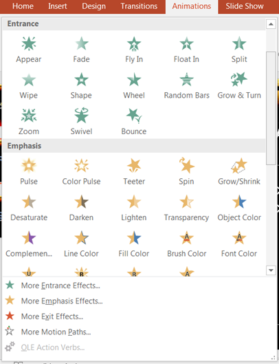
Hình 5.14. Thiết lập hiệu ứng cho bài trình chiếu
- Entrance: các đối tượng áp dụng hiệu ứng sẽ hiện trên slide hoặc di chuyển từ ngoài vào slide.
- Exit: các đối tượng áp dụng hiệu ứng sẽ biến mất khỏi slide hoặc di chuyển ra khỏi slide.
- Emphasis: các đối tượng áp dụng hiệu ứng sẽ được tô đậm/đổi màu chữ/thay đổi kích thước chữ….
- Motion Paths: các đối tượng áp dụng hiệu ứng sẽ di chuyển theo một đường đi được định sẵn.
Các đối tượng tham gia áp dụng hiệu ứng có thể là: text, hình ảnh, shape, chart, smart art, slide…
Trình tự thiết lập hiệu ứng cho một đối tượng:
- Chọn đối tượng cần tạo hiệu ứng
- Chọn kiểu hiệu ứng (thuộc một trong bốn dạng ở trên)
- Thiết lập mức độ áp dụng hiệu ứng.
- Thiết lập thời điểm, tốc độ và số lần lặp của hiệu ứng.
- Điều chỉnh trình tự hiển thị của các đối tượng theo dòng chảy nội dung.
2.1 Thiết lập các hiệu ứng cho Slide
2.1.1 Thiết lập hiệu ứng chuyển slide
Đây là một thiết lập trên toàn bộ các slide để tạo hiệu ứng chuyển tiếp từ slide này đến slide khác. Trình tự thực hiện:
Chọn Ribbon Transitions -> chọn dạng chuyển tiếp (hiệu ứng) -> chọn Effect Option -> Chọn tùy chọn phù hợp.
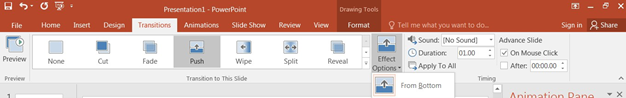
Hình 5.15. Thiết lập hiệu ứng chuyển slide
2.1.2 Thiết lập Timing cho Slide
Chọn Ribbon Transitions à (Group Timing)
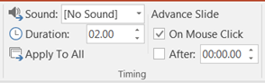
Các bước thiết lập hiệu ứng cho một đối tượng:
Chọn tab Animations -> nhóm Animations -> chọn hiệu ứng mong muốn
Hoặc, chọn Add Animation từ nhóm Advanced Animation -> chọn hiệu ứng mong
muốn.
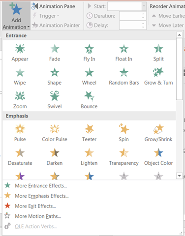
Hình 5.16. Chọn kiểu hiệu ứng cho đối tượng
Khi chọn một dạng hiệu ứng, trên Ribbon sẽ xuất hiện Effects Option tương ứng với hiệu ứng đã chọn. Tại đây, chúng ta chọn các tùy chỉnh phù hợp cho hiệu ứng. Tùy thuộc vào loại hiệu ứng được thiết lập mà các tùy chọn trong Effects Option sẽ khác nhau
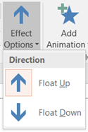
Để thiết lập thời gian, tốc độ và số lần lặp hiệu ứng của một đối tượng, thực hiện như sau:
Chọn Ribbon Format -> (Group Animations) -> Chọn biểu tượng mũi tên ở góc dưới bên phải của Group Animations, xuất hiện hộp thoại Effect Option.
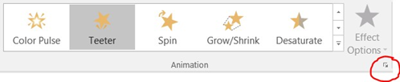
Tùy thuộc vào loại hiệu ứng, mà các tùy chọn trong hộp thoại Effect Option sẽ khác nhau.
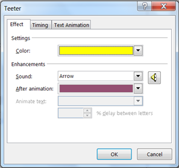
- Tab Effect: Thiết lập các tùy chọn cho hiệu ứng như đường đi (Path), màu sắc (color), Âm thanh (Sound), Hiệu ứng khi kết thúc (After animation), …
- Tab Timing: Áp đặt các tùy chọn thời gian lên hiệu ứng
- Start: Chọn sự kiện để bắt đầu một hiệu ứng. Onclick: chờ click chuột, With previous: khởi động đồng thời với hiệu ứng trước đó, After previous: khởi động sau một hiệu ứng nào đó.
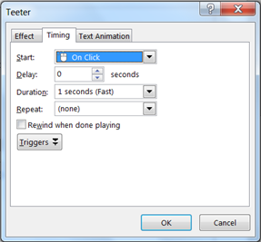
o Delay: thiết lập thời gian chờ trước khi hiệu ứng xảy ra.
o Duration: thời gian hiện thực hiệu ứng hay tốc độ (Very Fast/Fast/Medium/Slow/Very slow).
o Repeat: chọn số lần lặp lại cho hiệu ứng.
o Rewind when done playing: đối tượng được trả về nơi xuất phát sau khi thực hiện hiệu ứng
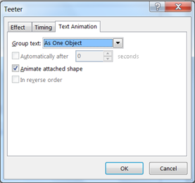
- Tab Text Animation:
o Group text: thiết lập cấp độ hiệu
o ứng cho văn bản trong text box hay ô giữ chỗ.
o Automatically after: là thời gian delay đã chọn
o Animate Attached shape: thiết lập khi văn bản nằm trong một shape. Trường hợp này shape sẽ hiển thị trước rồi mới đến văn bản.
o In reserve order: các hiệu ứng thực thi theo trình tự ngược lại.
2.2.3 Điều chỉnh trình tự xuất hiện các hiệu ứng
- Chọn tab Animations à nhóm Advanced Animation à chọn Animation Pane.
Hộp thoại xuất hiện tất cả các hiệu ứng đã được thiết lập trong Slide.
- Chọn hiệu ứng cần thay đổi trình tự xuất hiện.
- Thay đổi trật tự xuất hiện của hiệu ứng bằng các tùy chọn Move Earlier và Move Later tại mục Reorder Animation
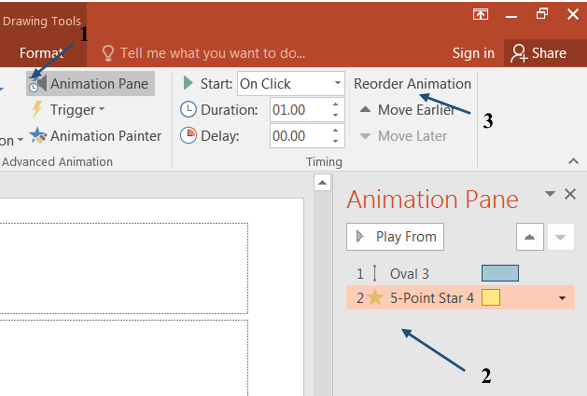
Hình 5.17. Điều chỉnh trình tự xuất hiện hiệu ứng
2.3 Trình diễn Presentation
2.3.1 Trình chiếu
Sau khi soạn thảo Slide, bước cuối cùng là thực hiện trình chiếu trước người xem.
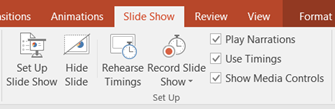
- Thiết lập trước khi trình chiếu
o Presented by a speaker (full screen): Cho phép thực hiện trình diễn ở chế độ toàn màn hình
o Browsed by an individual (window): Cho phép trình diễn với thanh cuộn khi slide thiết kế ở độ phân giải cao khiên việc hiển thị không đầy đủ trang.
o Browsed at a kiosk (full screen): Cho phép thực hiện trình diễn ở chế độ toàn màn hình, diễn ra một cách tự động và được lặp đi lặp lại.
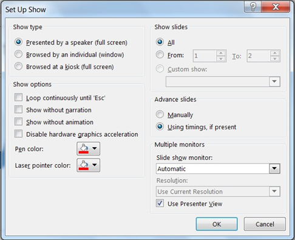
Hình 5.18. Cài đặt chế độ trình chiếu
- Show options:
o Loop conticuously until ‘Esc’: Cho phép trình diễn lặp đi lặp lại liên tục đến khi nhấn phím ESC. Tùy chọn này là mặc định khi sử dụng chế độ Browsed at a kiosk.
o Show without animation: Tắt các hiệu ứng
- Show Slides: Chọn các Slide cần trình chiếu.
o All: Trình diễn tất cả các Slide
o From … To …: Trình diễn một nhóm Slide liên tục.
o Manually: Chế độ chuyển trang thủ công (nhấn phím hoặc click chuột)
o Using timings, if present: Chế độ chuyển trang tự động (sau một khoảng thời gian được thiết lập trước).
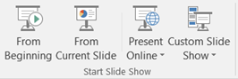
- Thực hiện trình chiếu
- Chọn Ribbon Slide Show à (Group Start Slide Show)
o From Beginning: Trình chiếu từ slide đầu tiên.
o From Current Slide: Trình chiếu từ slide hiện tại.
o Present Online: Trình chiếu trực tuyến trên Internet (tính năng mới của Power Point 2016)
o Custom Slide Show: Tạo trình chiếu từ việc chọn lựa một số slide nào đó thay vì chiếu tuần tự toàn bộ slide.
Ngoài ra, Power Point 2016 cho phép chụp thành phim (hoặc tạo fie pdf) khi trình chiếu Slide sử dụng menu Record Slide Show. PowerPooint 2016 tạo file wmv chứa toàn bộ quá trình chiếu tự động để người dùng có thể ghi thành đĩa phim.
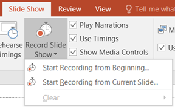
Để việc trình chiếu thành công, ngoài việc chuẩn bị kỹ lưỡng về nội dung thuyết trình, cần lưu ý một số điểm sau khi thiết kế và trình chiếu slide:
- Không nên đọc slide, vì người nghe có thể tự đọc lấy. Người nghe quan tâm và thích thú với sự hiểu biết của người diễn thuyết về chủ đề hiện tại.
- Không “trốn” sau các slide, mà nên nhìn thẳng vào người nghe. Người nghe muốn nhìn thấy người diễn thuyết như hai người đang nói chuyện với nhau.
- Các video minh họa là các “slide” sống động và lôi cuốn nhất.
- Sử dụng một hoặc hai font chữ cho bài trình chiếu, không dùng quá nhiều font. Sử dụng font chữ rõ ràng và dễ đọc (Font Arial, Roman, Gothic là những font phổ biến được đề nghị)
- Font size không nên nhỏ hơn 22pt. Các tiêu đề có font cỡ 28pt trở lên.
- Không nên nhập quá nhiều text cho một slide.
- Sử dụng chữ hoa cho các keyword muốn nhấn mạnh
- Chú ý màu nền của file trình diễn. Trên máy tính, màu nền tối sẫm với font chữ sáng thường khá đẹp, tuy nhiên khi trình chiếu trong môi trường sáng và khoảng cách xa thì rất khó nhìn rõ.
- Không nên quá lạm dụng hiệu ứng (amination), chỉ sử dụng hiệu ứng đủ để thể hiện ý đồ báo cáo, đồng thời nhấn mạnh nội dung trình chiếu với người xem. Khi sử dụng quá nhiều hiệu ứng trong bài trình chiếu, đôi khi có thể tạo phản ứng ngược, làm người xem khó tập trung vào vấn đề đang diễn thuyết.